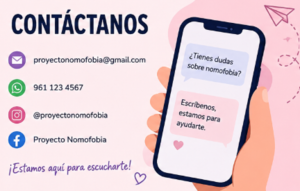

Hablemos sobre tu relación con la tecnología
Este espacio está pensado para que puedas acercarte al proyecto si necesitas orientación, información o apoyo sobre el uso del celular y la nomofobia.
No importa si es una duda pequeña o una experiencia personal, siempre es importante reflexionar sobre cómo usamos la tecnología en nuestra vida diaria.

¿Cómo puedes contactarnos?
+ Mensajes informativos sobre el proyecto
+ Dudas sobre el uso del celular y redes sociales
+ Solicitud de información sobre nomofobia
+ Apoyo para trabajos escolares o exposiciones